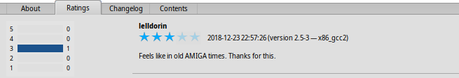

| Indice |
| Il filtro La lista L'area delle informazioni Menù Strumenti e Mostra Creare un Account Utente Valutare e commentare Registri di diagnostica |
 HaikuDepot
HaikuDepot
| Deskbar: | ||
| Percorso: | /boot/system/apps/HaikuDepot | |
| Impostazioni: | ~/config/settings/HaikuDepot/main_settings ~/config/cache/HaikuDepot/ - Icone in cache, schermate, descrizioni ecc. |
HaikuDepot è il punto di riferimento per la gestione delle applicazioni software. Con esso puoi esplorare e cercare nei repository dei pachetti e installare e disinstallare i pacchetti. Come impostazione predefinita, HaikuDepot parte con une lista di "Pacchetti in evidenza", software che sono ritenuti interessanti da molti utenti.

La seconda scheda mostra , la visualizzazione passa ad icone più piccole e informazioni aggiuntive disposte in colonne:

 Il filtro
Il filtro
In alto troviamo alcuni strumenti per filtrare la lista dei pacchetti disponibili sottostanti:
Il menù a pop-up ti permette di limitare la lista a determinate categorie come "Audio" o "Giochi".
Il campo di testo filtra la lista in modo che siano visualizzati tutti quei pacchetti che hanno nel loro nome o nella loro descrizione le stringhe inserite (delimitate da spazi).
Il menù della sbarra dei menù determina quali repository vengono interrogati. I pacchetti "Locale" sono quelli che sono stati installati da origini diverse da quelle dei repository in rete; magari da una chiavetta USB o scaricati da qualche sito web oppure un pacchetto che tu stesso hai costruito.
La lista
Come in ogni finestra di Tracker, puoi scegliere da un menù contestuale quali colonne visualizzare attraverso un clic destro nell'intestazion delle colonne. Un clic di sinistra ordina la lista secondo quella colonna. Certo, puoi sempre riordinare le colonne trascinandole su una nuova posizione.
Per ogni pacchetto la colonna di stato può avere uno solo tra diversi stati:
: Il pacchetto è attualmente installato e pronto all'uso.
: Il pacchetto esiste in quel repository e può essere scaricato e installato. Se c'è qualche dipendenza con altri pacchetti, si verrà informati in merito quando si procederà con l'installazione e verrà posta un scelta riguardo a tutto ciò che occorre scaricare/installare.
: In attesa viene mostrato quando un pacchetto è in coda per il download/installazione. Quando si sta scaricando un pacchetto, l'avanzamento viene mostrato con un valore percentuale.
Si può prendere la linea puntata che sta sotto la lista dei pacchetti e l'area delle informazioni per ridimensionare verticalmente la lista dei pacchetti.
L'area delle informazioni
In basso c'è un'area che visualizza le informazioni sul pacchetto attualmente selezionato nella lista superiore.
A destra del nome del pacchetto, autore, valutazione e versione c'è un pulsante che – in base allo stato attuale del pacchetto – ti permette di fargli o . Se un pacchetto è già installato, troverai un pulsante aggiuntivo per aprire l'applicazione.
Sotto ci sono quattro schede: Informazioni su..., Valutazioni, Registro modifiche e Contenuto.
La prima scheda ha una descrizione dettagliata del pacchetto, schermate, un indirizzo di contatto e l'URL del gruppo che mantiene il software impacchettato, se disponibili. Cliccandoo la istantanea in miniatura essa si aprirà a dimensione intera in una nuova finestra
La seconda scheda mostra le valutazioni e i commenti degli utenti, se disponibili.
A sinistra c'è una statistica che mostra il numero di stelle (da 1 a 5) che il pacchetto ha ottenuto e da quanti utenti.
Nel mezzo ci sono i commenti degli utenti con il loro soprannome, il numero di stelle che hanno dato al pacchetto e quale versione del pacchetto hanno valutato e commentato. Troverai più informazioni su come valutare un pacchetto più giù.
Qui troverai una cronologia dettagliata di tutte le versioni del pacchetto pubblicate finora, se chi mantiene il pacchetto offre quell'informazione.
L'ultima scheda mostra tutti i file e le cartelle contenute nel pacchetto. Questo funziona solo per i pacchetti già scaricati.
Menù Strumenti e Mostra
Nel menù nella parte superiore della finestra, troverai una voce . Questo richiederà dai repository un elenco aggiornato di tutti i pacchetti disponibili.
La seconda voce è . Apre le preferenze Repository, per aggiungere/rimuovere o disabilitare e abilitare i repository.
apre Installazione Aggiornamenti per cercare e installare i pacchetti aggiornati.
Sotto puoi scegliere se visualizzare nella lista dei pacchetti anche i pacchetti di e i . Per l'utente normale questi non sono di interesse e intaseranno solo la lista. Tuttavia sono importanti per chi sviluppa e compila programmi che dipendono da librerie, headers ecc..
Più interessanti sono le opzioni per mostrare solo i e i .
Creare un account utente
Per poter votare un pacchetto ti serve un acccount sul Server di Haiku Depot che serve tutti i pacchetti e tiene traccia di valutazioni e commenti. Puoi creare un account all'interno dell'applicazione HaikuDepot facendo clic sul menù nella parte più a destra della sbarra dei menù che mostra il tuo stato attuale: . Scegliendo si apre una finestra con due schede; una per inserire il tuo nome utente e la password (una volta che li hai) al fine di eseguire l'accesso, mentre l'altra per creare un nuovo account:

Per creare un account hai bisogno di:
- usare un nome utente composto da tutte lettere minuscole e senza caratteri speciali
- usare una password che è lunga almeno 8 caratteri con almeno 2 lettere maiuscole e 2 numeri
- fornire un indirizzo e-mail valido (nel caso ti dimenticassi la password e ne vorresti una nuova)
- risolvere il captcha
- spunta le caselle per confermare di avere più di 16 anni ed aver letto le condizioni d'uso nel collegamento lì sotto.
Dopo aver effettuato l'accesso, il menù in alto a destra della finestra di HaikuDepot dirà , mostrando il tuo nome utente. Il menù ora ti offre la possibilità di fare o .
Valutare e commentare
Dopo aver creato un account utente ed aver effettuato l'accesso, puoi valutare un pacchetto e lasciare un commento, se lo desideri. Basta passare col mouse sopre le stelle di valutazione nell'area delle informazioni di un pacchetto e queste diventeranno un pulsante . Fagli clic per aprire la finestra di valutazione:

Qui sposta il mouse sopra le stelle per illuminarle e scegliere il tuo voto, puoi anche scegliere di giudicare la stabilità dell'applicazione con dei livelli predeterminati e scegliere la lingua del tuo opzionale commento. Per dare un senso al tuo commento dovresti aver utilizzato la applicazione che stai per valutare per un po' di tempo, in modo tale da familiarizzare con le sue funzionalità, errori e le sue stranezze. E non scrivere la nuova Divina Commedia... mantienilo corto, dolce e cortese. :)
Dopo aver fatto clic su i dati vengono trasmessi al server. Potresti dover andare sul menù per fare prima di poter vedere le modifiche.
In ogni momento puoi tornare e modificare il tuo commento e rivalutare. Puoi anche nascondere agli altri utenti il tuo voto, disattivando la casella di spunta , che compare in questa finestra una volta voltato il pacchetto.
Registri di diagnostica
Quando si usa HaikuDepot, questi interagisce con la rete e i servizi locali. Le cose possono andar storte, cualche volta in maniere che non potevano essere previste al momento della scrittura del programma. In questi casi il messaggio di error potrebbe non essere specifico. Per aiutare a diagnosticare un problema indicato, HaikuDepot può fornire un registro su cosa la applicazione fa.
Un messaggio di errore può suggerire di vedere i registri per ottenere informazioni più approfondite o ti si potrà chiedere di fornire il registro quando segnalerai un problema al sistema di tracciamento errori di Haiku.
Per vedere i registri di diagnostica, HaikuDepot ha bisogno di essere avviato dal Terminale:
HaikuDepot -v debug
Il comando usa l'argomento -v per controllare la prolissità dei registri di diagnostica. I valori possibili sono: off, info, debug e trace. Se usi off registrerai solo una quantità piccola di dati, mentre trace registrerà il più alto numero di dettagli.
Quando parte HaikuDepot e quando interagisce con l'applicazione, vedrai scorrere del testo nella finestra del Terminale; quello è il registro di diagnostica.